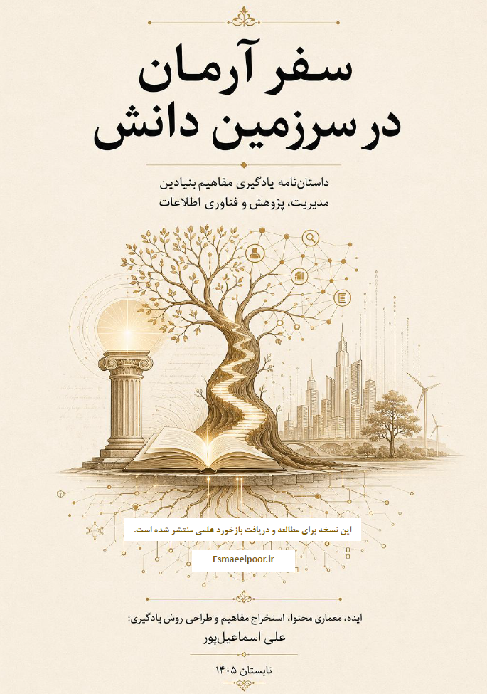

یک سفر فکری از فلسفه علم تا سازمان دیجیتال پایدار
دریافت نسخه PDF کتاباین کتاب تلاش میکند مفاهیم پیچیده علمی و مدیریتی را در قالب داستان، تصویر ذهنی و یک مسیر یادگیری منسجم ارائه کند؛ مسیری که از فلسفه علم آغاز شده و به سازمان دیجیتال پایدار میرسد.
برای مشاهده آثار، مقالات و پروژههای پژوهشی:
www.esmaeelpoor.ir